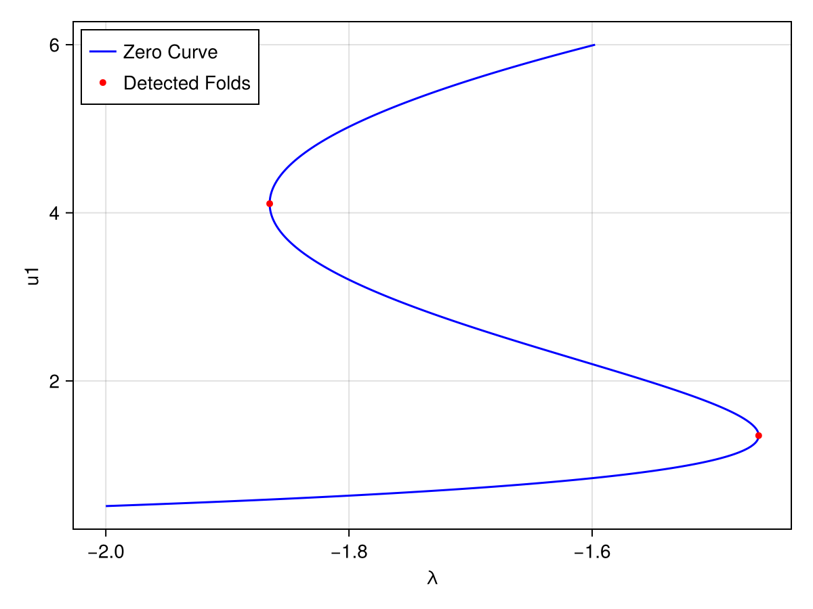

Basic Example
This is a simple tutorial for setting up, running, and plotting a pseudoarclength continuation scheme with SimpleContinuation.jl. As always, first add dependencies
using SimpleContinuation # This package
using DifferentiationInterface # For automatic differenatiation via ForwardDiff
using Parameters # provides useful macros
using FastClosures # provides useful macros
using ForwardDiff: ForwardDiff # For automatic differenatiation via ForwardDiff
using CairoMakie # for plottingNext, we'll need to setup the problem. First, define the in-place function in the form f(F, u, λ), where F is the storage for the residuals, u are the unknowns, and λ is the continuation parameter.
function TMvf(F, u, λ)
par_tm = (α=1.5, τ=0.013, J=3.07, λ=-2.0, τD=0.200, U0=0.3, τF=1.5, τS=0.007)
@unpack J, α, τ, τD, τF, U0 = par_tm
E, x, u = u
SS0 = J * u * x * E + λ
SS1 = α * log(1.0 + exp(SS0 / α))
F[1] = (-E + SS1) / τ
F[2] = (1.0 - x) / τD - u * x * E
F[3] = (U0 - u) / τF + U0 * (1.0 - u) * E
return nothing
endHere, TMvf is a 3-dimensional system with 1 continuation parameter.
Since we are defining our jacobians with ForwardDiff, we use the following two helper functions.
function TMvf(du, uλ)
n = length(uλ) - 1
u = view(uλ, 1:n)
λ = uλ[end]
return TMvf(du, u, λ)
end
# Utility function
function fill_vec!(uλ, u, λ)
uλ[1:3] .= u
uλ[4] = λ
return uλ
endNext, we define the in-place jacobian functions, which can be constructed in several ways. Here, we use sys_ujac, which is the square Jacobian, $\frac{\partial F}{\partial u}$, and sys_jac, the full (non-square) system jacobian $\frac{\partial F}{\partial [u;λ]}$. The expected arguments for each are J: storage for system jacobian, F storage for residuals, u: unknown vector, λ: continuation parameter.
# Create Jacobians
J_cache = prepare_jacobian(TMvf, zeros(3), AutoForwardDiff(), zeros(4))
uλ = zeros(4)
sys_jac = @closure (J, F, u, λ) ->
jacobian!(TMvf, F, J, J_cache, AutoForwardDiff(), fill_vec!(uλ, u, λ))
sys_ujac(J, F, u, λ) = jacobian!((y, x) -> TMvf(y, x, λ), F, J, AutoForwardDiff(), u)Next, we can construct the ContinuationProblem:
cf = ContinuationFunction{Val{true}}(TMvf, sys_ujac, sys_jac) # construct the continuation problem (Val{true} denotes we have provied the full system jacobian ∂F/∂[u;λ])
u0 = [0.238616, 0.982747, 0.367876] # Initial guess
λ0 = -2.0 # starting value for continuation parameter
# Form Problem
cont_prob = ContinuationProblem(
cf,
u0,
λ0,
(-4.0, -0.9), #(λmin, λmax)
)Now, we'll run the continuation scheme. First, let's set up a custom TerminateContinuationCallback to terminate when the first unknown reaches a value of 6. Also, define a detection callback to find and save fold points where the curve reverses direction.
# create a termination callback
cb_term_fun(u, λ) = u[1] - 6 # terminate when u[1]=6
cb_term = TerminateContinuationCallback(cb_term_fun) # termination callback
det_cb = FoldBifurcationDetectionCallback() # detection callback
# perform continuation
cache = continuation(
cont_prob, # Problem
PALC(); # Continuation method
initial_tangent=SecantInitialTangent(), # Initial tangent computation method
detection_callback = det_cb, # detection callback
term_callback = cb_term, # termination callback
dsmax=0.01, # maximum step size
dsmin=0.001, # minimum step size
ds0 = 0.01, # initial step size
)Lastly, we'll plot the results. The computed zero curve is stored in cache.br, and the detected fold points found with det_cb are stored in cache.detected_points.
# plot result
fig = Figure()
ax = Axis(fig[1, 1]; xlabel="λ", ylabel="u1")
λs = map(i -> cache.br[i][2], 1:length(cache.br))
Es = map(i -> cache.br[i][1][1], 1:length(cache.br))
λs_det = map(i->cache.detected_points[i][2], 1:length(cache.detected_points))
Es_det = map(i -> cache.detected_points[i][1][1], 1:length(cache.detected_points))
lines!(ax, λs, Es; color=:blue, label="Zero Curve")
scatter!(ax, λs_det, Es_det; color=:red, markersize=7, label="Detected Folds")
axislegend(ax;position=:lt)
fig
As expected, the zero curve is plotted in blue, both points where the curve reverses direction are marked in red, and the continuation stops when u[1]=6 is satisfied.